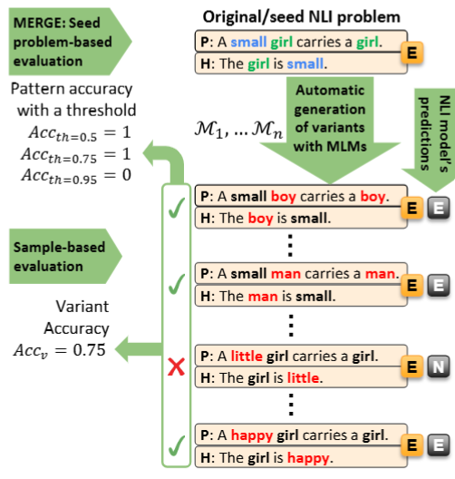

MERGE: Minimal Expression-Replacement GEneralization Test for Natural Language Inference  Mădălina Zgreabăn, Tejaswini Deoskar, Lasha Abzianidze Preprint 2025 · arXiv:2510.24295 Read paper
Hit or Be Hit: Tests of (Pre) Compositional Abilities in Vision and Language Models Mădălina Zgreabăn, Albert Gatt, and Pablo Mosteiro KONVENS 2025 Read paper
Using a bilingual dual-path model for exploring syntactic mixing of simultaneous bilingual children Mădălina Zgreabăn and Alex Stasica LingUU 2024 Read paper